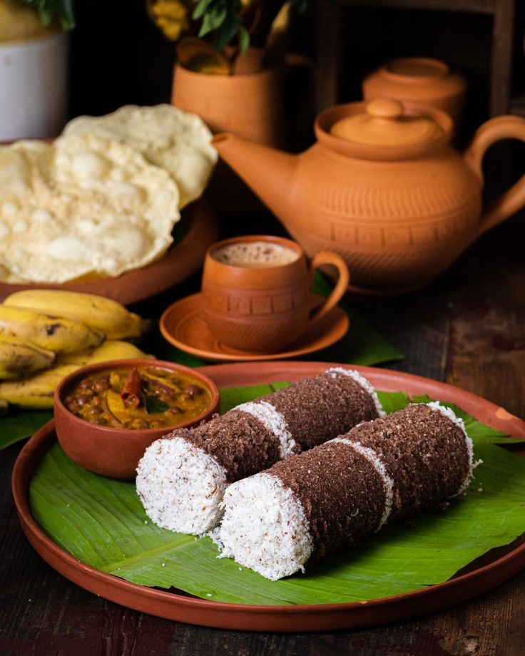

Puttu Kadala

Ingredients
- 2 cups rice flour
- 1 cup grated coconut
- 2 cups black chickpeas, cooked
- 1 large onion, finely chopped
- 2 tomatoes, chopped
- 2 tbsp ginger-garlic paste
- Spices (turmeric, chili powder, coriander powder)
- Salt to taste
- Oil for cooking
Steps
- Mix rice flour with water and salt to form a crumbly mixture.
- Layer the rice flour mixture and grated coconut in a puttu maker and steam for 10 minutes.
- In a pan, heat oil and sauté onions until golden brown.
- Add ginger-garlic paste and cook until raw smell disappears.
- Add tomatoes and cook until they turn mushy.
- Add spices, salt, and cooked chickpeas. Simmer for 15 minutes.
- Serve hot with puttu.
Comments and Ratings